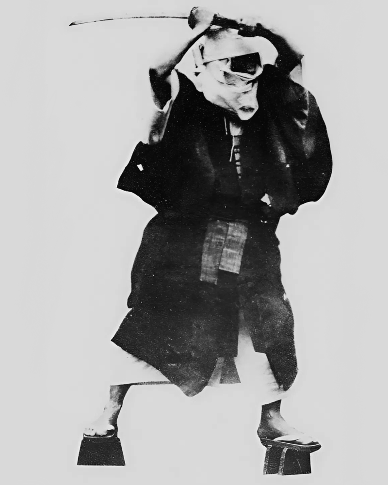
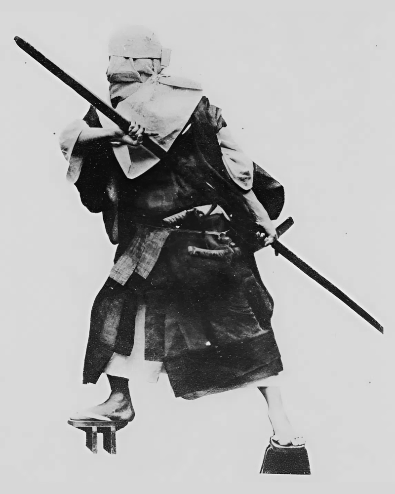
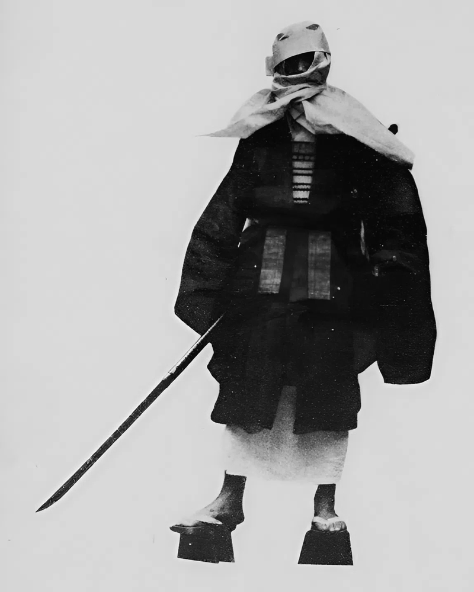
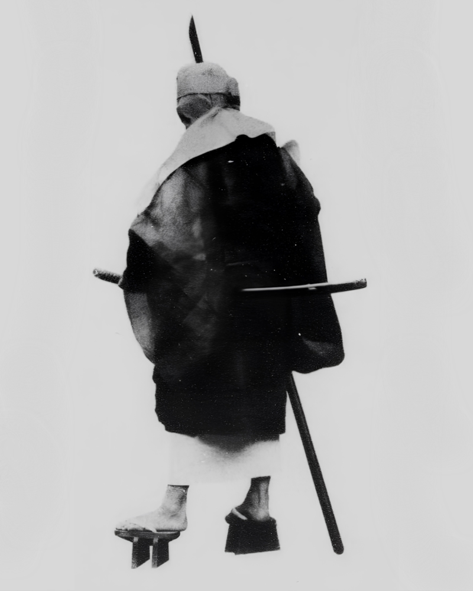

Japanese Hieizan monk warrior outfit
The subject represents a yamabōshi (山法師), a warrior monk from Mount Hiei during the Heian period (794–1185), photographed in 1916. The term derives from their characteristic appearance, particularly their covered head.
Yamabōshi differed from samurai: while the latter favored the sword, these warrior monks used long-range weapons such as the spear, naginata, and nagamaki. These weapons were especially effective in combat at a distance, particularly for striking the opponent’s legs; a single cut to the ankle could almost guarantee victory. However, the very length of these weapons was also a limitation: in confined spaces, such as dense bamboo groves, they became less effective, making such environments a natural refuge.
During the Sengoku period, yamabōshi were sometimes referred to as “evil monks” because of their great strength and their role in armed conflicts. As evidence of their influence, it is said that the retired Emperor Shirakawa claimed he could not control three things: the dice of the game of sugoroku, the waters of the Kamo River, and the monks of Mount Hiei.
From a clothing perspective, the yamabōshi is recognizable by the zukin, a monastic hood that fully covers the head. They wear a white kosode (a short-sleeved robe) under a haramaki armor that protects the torso, over which is a black monastic robe (kūe), secured at the waist with a formal belt (sekiband). The attire is completed by high black footwear and combat equipment.